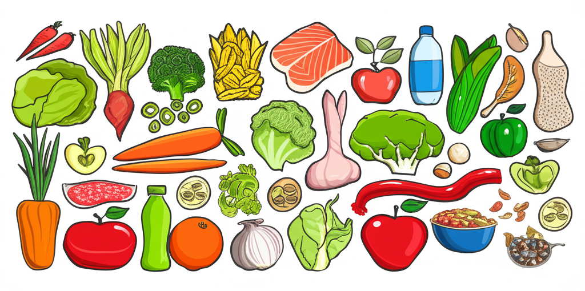

# 近期健康與體重管理新聞彙總
## 引言
本文整理了近期（2025年3月28日至3月29日）關於健康與體重管理的新聞，涵蓋了政策動態、醫療資訊、名人動態等多個方面。從四川推出體重管理“官方指南”，到高血壓藥物服用問題的討論，再到運動員的減重經驗分享，體現了社會對健康和體重管理的日益重視。
## 主體內容
### 第一點：官方層面的體重管理推動
四川省似乎正在將公民健康納入政府考核，推出體重管理“官方指南”。 這表明政府層面開始重視國民健康，並嘗試通過政策引導，提升國民健康水平。 臨沂市也啟動了“體重管理年”活動，顯示出這種趨勢正在擴展。值得關注的是，這種以政府為主導的健康管理模式，是否能夠有效地提升國民健康水平，以及在執行過程中可能會遇到的挑戰。
### 第二點：醫療資訊與疾病管理
高血壓患者對於藥物服用問題存在諸多疑問，例如是否需要終身服藥，以及是否可以自行停藥。新聞報導提供了相關資訊，強調控制體重、戒菸戒酒、培養運動習慣等生活方式的改善，有機會讓血壓逐漸改善。此外，高雄醫學大學附設醫院也提供了肥胖的治療相關資訊，表明醫療機構在肥胖管理方面也在積極作為。
### 第三點：名人動態與減重經驗分享
藍寅倫為了健康減重7公斤，表示身體負擔不大。 另外，網紅志祺七七也大方談論整形和減重經歷，這類名人動態往往能引起公眾對相關話題的關注，並可能影響公眾的健康意識和行為。
## 結論
總而言之，近期健康與體重管理的新聞呈現出多元化的趨勢。 從官方政策的推動，到醫療機構提供的專業資訊，再到名人經驗的分享，都反映了社會對健康問題的關注。 公眾應理性看待這些資訊，並結合自身情況，制定科學合理的健康管理計畫。